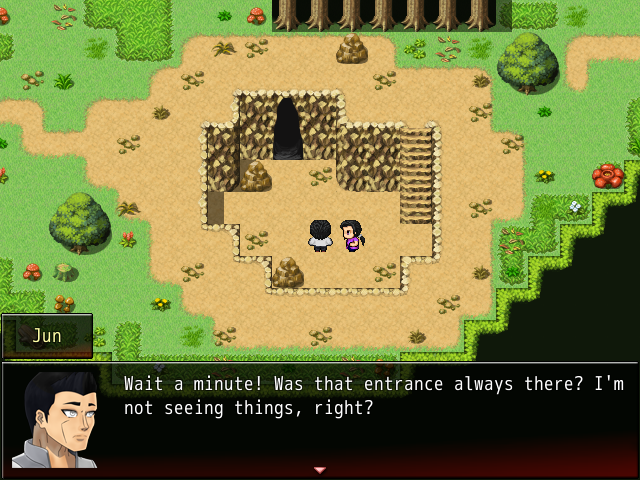
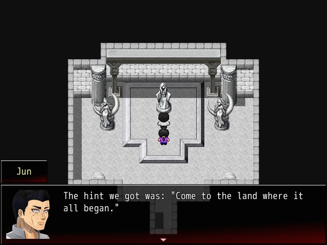
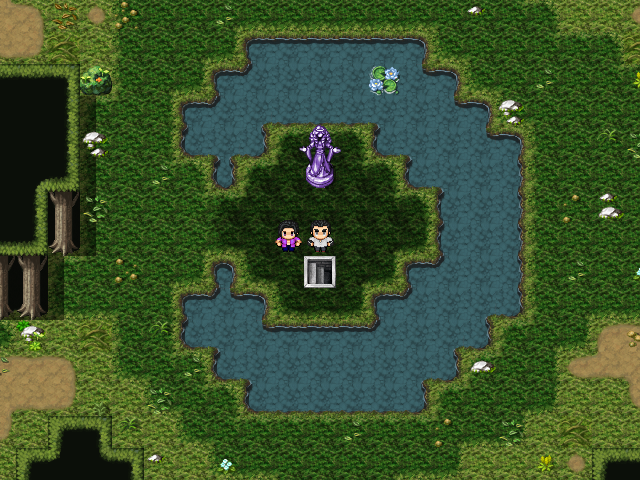
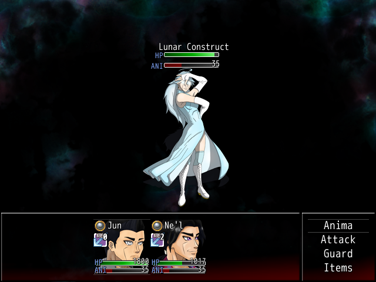
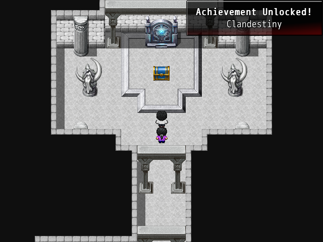

Achievement - Clandestiny
Uncover an ancient secret.
This achievement involves finding and defeating the game's superboss.
Requirements
Shining Star (partial completion), Secrets of the Forest (partial completion)
Beginning
|  |  |
After partial completion of Shining Star, you will find a crater in Elysian Forest. After grabbing the Lunar Gem, an entrance will appear. You will find a being known as a Lunar Construct inside. To take part in her trial, you must go to "the land where it all began."
Finding the Lunar Construct
Stop scrolling at this point if you would like to find it on your own!
Location of the Trial
Make your way to the Ancestral Forest, accessible from Canowi Inner.
Battling the Lunar Construct
This battle is the most difficult battle in the game, with four separate phases. You do not want to do this battle without maxed gear. It is recommended to obtain the Dragon Armor before fighting the superboss.
The Lunar Construct will attack on the first turn, be sure to Guard in order to not be defeated instantly. The Lunar Construct generates 10 ANI per turn. Her attacks will differ depending on the phase of battle.
Reward
After defeating the Lunar Construct you will be given the achievement. Be sure to open the chest that appears - within it is the armor Sujigaki. It grants passive health/anima regeneration, increased critical, evasion, and hit rate, and resistance to all negative status effects, as well as some great stats.